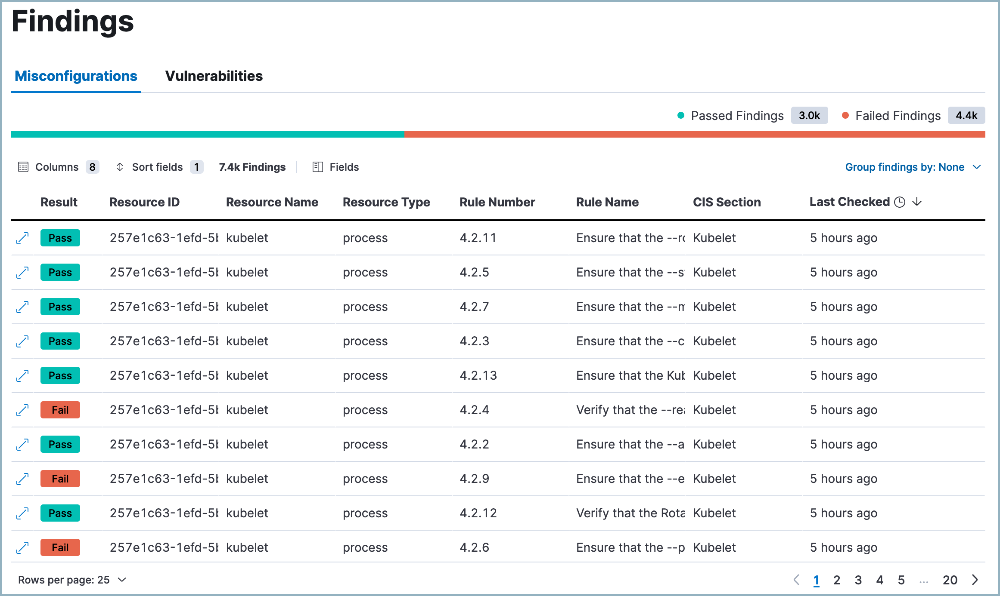

Findings pageedit

The Findings page shows how your Kubernetes clusters' configuration measures up to the standards defined on the CSP Benchmarks page.
Findings are organized by the resource IDs of the associated Kubernetes infrastructure and include data about the infrastructure and benchmark rules. Each finding’s result (pass or fail) indicates whether a particular part of your Kubernetes infrastructure meets an active CSP benchmark rule.
You can filter table data by entering queries into the KQL search bar.